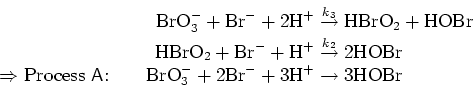

Here we study the most prominent example of an oscillatory reaction, the BZ reaction system. Malonic acid as an organic species is oxidised by an acidified bromate solution in the presence of a metal ion catalyst. The exact chemical mechanism of the BZ system is still an area of research but it is believed that the following reaction mechanism developed by Field, Körös and Noyes (FKN) describes the basic feedback mechanism.

The major feedback routes occur through Process A, which removes the bromide ion, and Process B,
which provides the autocatalysis.
When the bromide ion concentration has fallen below a certain level then Process B is initiated.
This overall step includes the autocatalysis step as well as the oxidation of the metal ion catalyst.
The rate of accumulation thus increases auto catalytically as the concentration of hydrogen bromite increases.
The bromide ion concentration competes strongly for the hydrogen bromite it plays the role of an inhibitor
delaying the autocatalytic feed back.
Process C closes the feedback loop by regenerating the start up conditions through reducing the catalyst
and the production of bromine ions.
One explanation of this resetting reaction is that HOBr can lead to the bromination of malonic acid to produce bromomalonic acid BrMA,
which in turn together with MA reduces the catalyst and produces the bromine ions.
Since this process is still not fully understood we need to introduce the adjustable parameter f to
get the right amount of bromine ions.